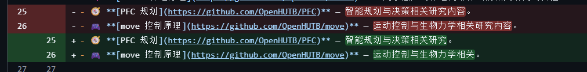
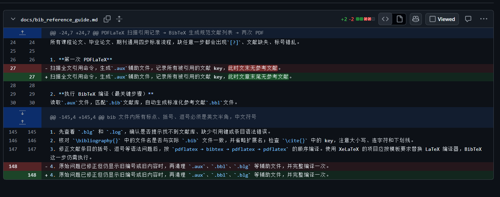
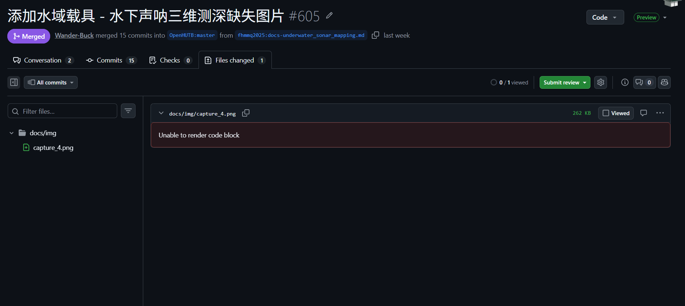
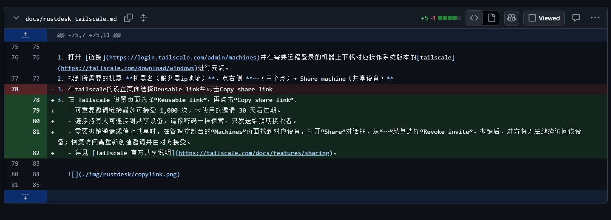
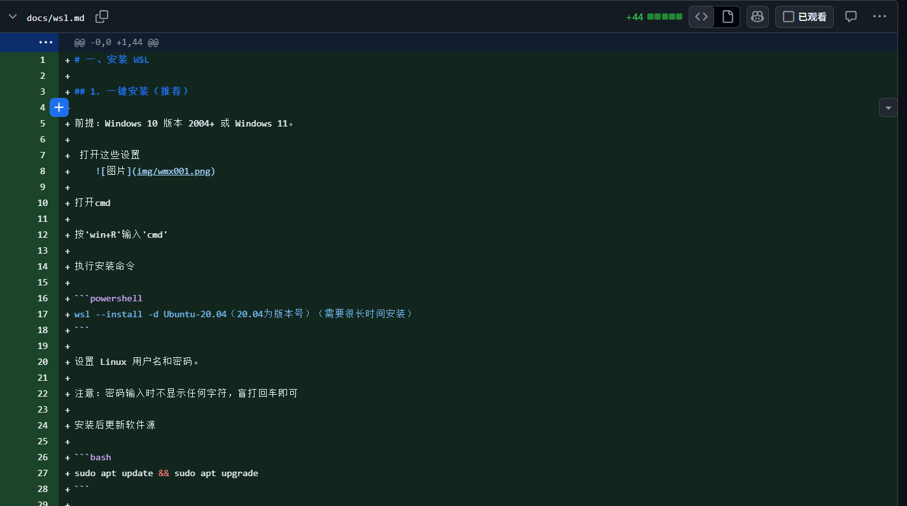
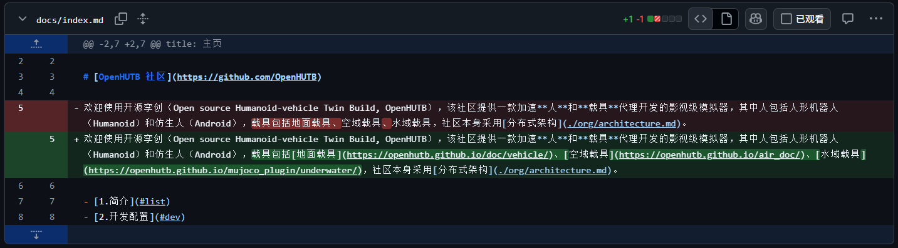

文档修改指南
（创建拉取请求之后一定要在下方的评论区@有权限的人审核）
1. 下载 Git
下载后会得到一个 .exe 文件，双击运行安装：
https://git-scm.com/install/windows
2. 下载 Visual Studio Code
下载后会得到一个 .exe 文件，双击运行安装：
https://visualstudio.microsoft.com/zh-hans/downloads/
3. 克隆仓库
注意：该命令中的
{用户名}请替换为自己的用户名。
git clone https://github.com/{用户名}/.github.git
克隆完成后进入仓库目录：
cd .github
4. 介绍 .github 文件结构
docs：主要修改的地方。docs/img：存放图片的地方。图片必须重命名，不可以像"屏幕截图 2026-11-04 011000.png"之类的默认名称。docs/src：存放代码的地方。docs/paper：放论文的地方。docs下的.md文件：修改的具体地址（.md文件也是 Markdown 源文件）。
5. 快速修改方向（红色部分是原句，绿色部分是改句）
- 将一些不重要的句子换成另一些不重要的句子。


- 跑一些代码（文档之类的）之后补充细节，以及该文档与你跑过程一切不一样的地方。


- 原创一些文档但故意留一些错误（句子，代码错误，符号，固定路径）交给其他人补全。

-
修改一些表达不到位的句子。
-
加一些跳转链接.

6. 如何修改
- 在文档网站找到你要修改的地方。(你现在在看的就是文档网站)
- 在克隆仓库的
..\.github\mkdocs.yml找到你在文档网站需要修改的地方所对应的.md文件。 - 打开对应的
.md文件，在 Visual Studio Code 中修改。 - 保存修改（
Ctrl+S）。 - 如果是添加文档，要在
mkdocs.yml里对应的地方加入链接，或在其他.md文件加入跳转链接。
在 mkdocs.yml 里对应的地方加入链接的格式：
- 标题: '.md文件路径(在docs之后的路径，docs不用写)'
例如：
- 模拟器演示：涉水效果: 'introduction.md'
- 使用 VScode 推送代码: 'dev/vscode_push.md'
在其他 .md 文件加入跳转链接格式：
[标题](.md文件路径)
（如果两个 .md 文件在同一个目录下，括号里直接写该文件名即可）
例如：
[HoloOcean Windows 搭建教程](HoloOcean-Windows-Setup.md)
7. 预览成果
-
下载 MkDocs（在命令行中运行以下命令下载）：
（如果出现报错，可以将错误信息发给 AI 解决）pip install mkdocs pip install mkdocs-material -
在终端
cd到你的.github文件夹路径下（例如：cd 你的路径/.github），然后运行预览指令：mkdocs serve -
找到终端里输出的类似于
http://127.0.0.1:8000/的网址，复制到浏览器中打开，预览你的修改成果。（检查界面是否出错、图片是否正常显示、跳转链接是否失效）。